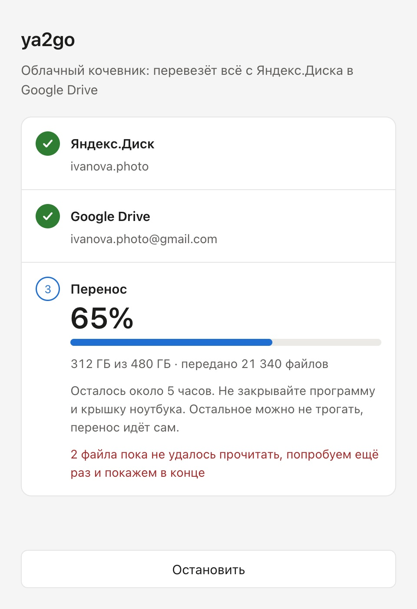
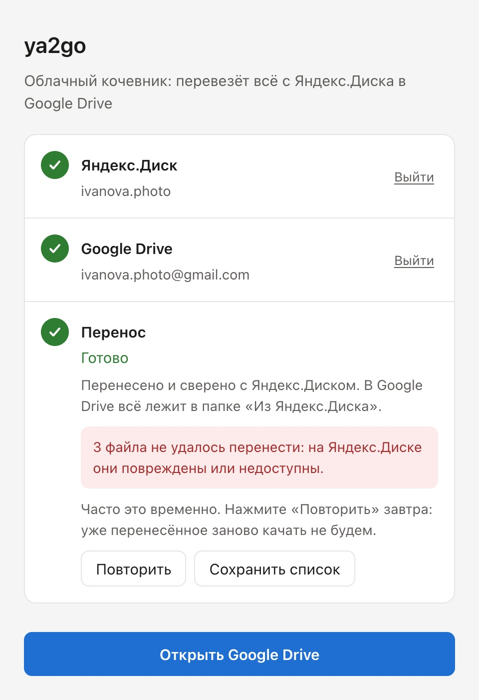
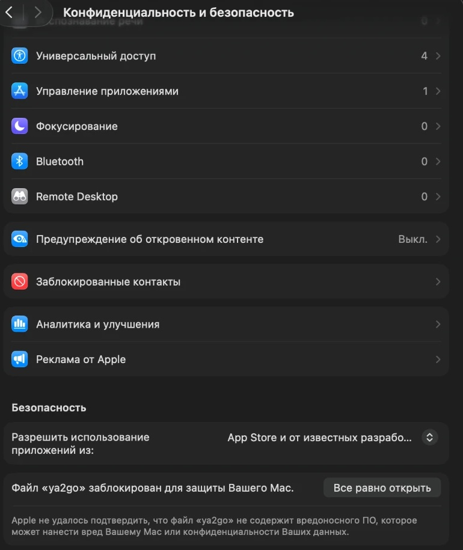

Почему не архивом
Один повреждённый файл обрывает весь архив
Когда вы скачиваете с Яндекс.Диска папку, он собирает архив на лету. Если по дороге попадается файл, который Яндекс не может отдать, соединение рвётся, и на руках остаётся битый архив.
ya2go берёт файлы по одному. Такой файл откладывается в сторону, остальные переезжают дальше, а в конце каждый файл сверяется с оригиналом.
Архивом
Один битый файл, и закачка оборвалась
ya2go
Битый файл в списке, всё остальное на новом месте


Как это работает
Ваши файлы не проходят через нас
Серверов у ya2go нет. Программа работает на вашем компьютере и передаёт файлы напрямую из Яндекса в Google.
-
Откуда
Яндекс.Диск
Только чтение. Удалить или изменить ваши файлы программа не может.
-
Через
Ваш компьютер
По одному файлу, со сверкой. Мы не видим ни файлов, ни паролей.
-
Куда
Google Drive или ваш диск
В Google программа видит только свои файлы. Или просто папка на компьютере, внешний диск.
Подробно в политике конфиденциальности.
Установка
Пара минут, и можно ехать
Скачайте и перетащите в «Программы»
Скачайте ya2go для Mac, откройте архив двойным щелчком и перетащите ya2go в папку «Программы».
Разрешите первый запуск
Mac скажет, что не может проверить разработчика: программа не из App Store. Нажмите «Готово», откройте «Системные настройки» → «Конфиденциальность и безопасность» и внизу нажмите «Всё равно открыть». Это нужно один раз.

Пролистайте настройки до блока «Безопасность» и нажмите обведённую кнопку. Войдите и выберите, куда перевезти
Войдите в Яндекс в окне браузера, которое откроет программа, и проверьте, что под ним написан ваш аккаунт. Дальше выберите: Google Drive (тогда войдите и в Google) или папка на компьютере, например на внешнем диске. И нажмите «Начать перенос».
Скачайте и запустите
Скачайте ya2go для Windows и запустите его двойным щелчком. Этот файл и есть программа: мастера установки нет, проходить ничего не придётся.
Разрешите первый запуск
Если появится синее окно «Windows защитила ваш компьютер», нажмите «Подробнее» → «Выполнить в любом случае». Если Windows попросит установить WebView2, согласитесь: это компонент Microsoft для окна программы.
Войдите и выберите, куда перевезти
Войдите в Яндекс в окне браузера, которое откроет программа, и проверьте, что под ним написан ваш аккаунт. Дальше выберите: Google Drive (тогда войдите и в Google) или папка на компьютере, например на внешнем диске. И нажмите «Начать перенос».
Вопросы
Что спрашивают перед переездом
Сколько это стоит?
Бесплатно. Если ya2go помог, можно поблагодарить автора.
Сколько займёт перенос?
Зависит от интернета и объёма. Google принимает до 750 ГБ в сутки, поэтому большой архив в Google переедет за несколько дней: программа сама продолжит на следующий день. В папку на диске ограничения нет. Пока идёт перенос, не закрывайте программу и крышку ноутбука. Засыпать компьютер программа не даст.
Можно скачать всё на компьютер или внешний диск?
Да. На втором шаге выберите «Папка на компьютере» и укажите папку, например на внешнем диске. Всё ляжет туда с теми же папками, а для такого переноса нет суточного лимита Google: файлы идут со скоростью вашего интернета.
Хватит ли места?
Программа ещё до начала посчитает объём на Яндексе и скажет, хватает ли места там, куда вы везёте. Бесплатно в Google Drive 15 ГБ, место можно докупить в Google One. Для папки нужно столько же свободного места на диске, сколько занято на Яндексе.
Сохранятся ли папки и даты?
Да. Всё ляжет в папку «Из Яндекс.Диска» с теми же папками внутри, в Google Drive или на вашем диске. Дата съёмки хранится внутри самих фото и переезжает вместе с ними. В Google Фото сами они не попадут: это отдельный сервис.
Что делать с файлами, которые не перенеслись?
Чаще всего это временный сбой Яндекса. Нажмите «Повторить» на следующий день: уже перенесённое заново не качается. Список можно сохранить в файл, чтобы проверить эти файлы на Яндексе вручную.
Если интернет пропадёт или я выключу компьютер?
Ничего не потеряется. При следующем запуске перенос продолжится с того же места.
Почему Mac и Windows предупреждают о программе?
Так они встречают любую программу, которая продаётся не через их магазины. Программа не меняет ничего на компьютере и не просит прав администратора. Предупреждение появляется только при первом запуске.
Поблагодарить
ya2go бесплатный
Если программа спасла ваш архив, можно поблагодарить автора любой суммой. Это не обязательно: всё работает и так.
ПоблагодаритьОплата картой или через СБП на странице CloudTips.
Годы фотографий не должны зависеть от одного дата-центра. Перевезите архив, пока он цел.
Скачать бесплатно